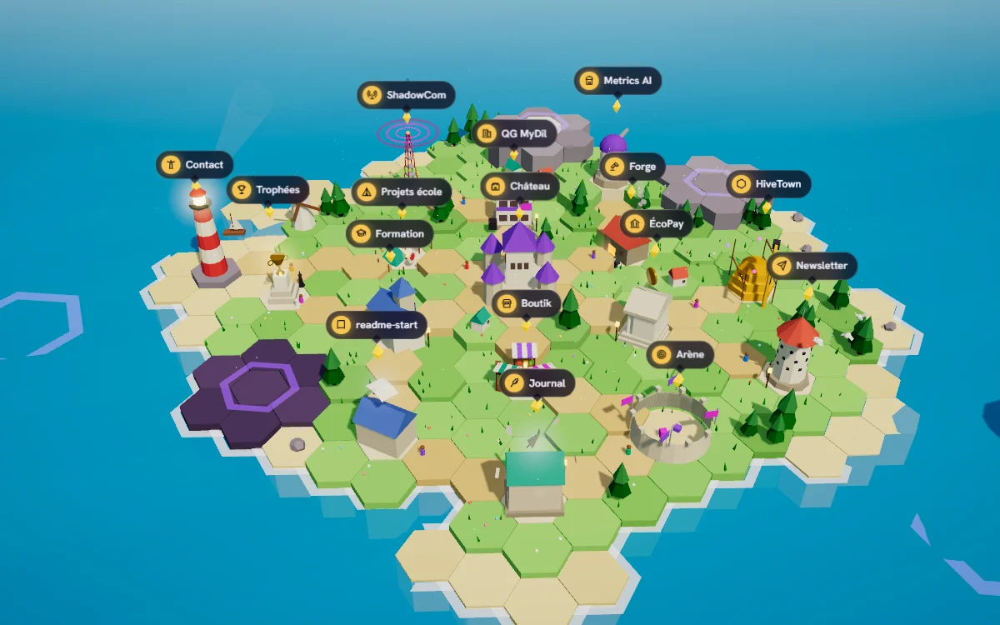

Développement web
Applications complètes, du back-end à l'interface.
- HTML / CSS
- JavaScript
- TypeScript
- PHP
- Symfony
- Laravel
- Next.js / React
- Angular
- Vue.js
- Nest.js
- Tailwind
- Three.js
Disponible pour un stage de 4 à 5 semaines
Développeur web et mobile · Systèmes et réseaux · IoT
Étudiant en 2e année de Bachelor Informatique à l'EPSI Lyon. Je construis des applications complètes, je monte des infrastructures et je prototype des objets connectés. Mon portfolio existe aussi en version jeu : une île en 3D à explorer.
Nouveau L'île en 3D, modélisée dans Blender : à parcourir au défilement
Mon portfolio est aussi un jeu 16 lieux5 boss49 questions16 succèsLe Monde d'Ernest
Tout ce qui est sur cette page existe aussi sous forme de jeu, écrit en C# avec Blazor et Three.js.
16 bâtiments : chaque lieu est un projet, une compétence ou une étape de mon parcours.
Des questions sur mes projets et sur le code, avec des cœurs, des combos et des coups critiques.
16 succès, 8 rangs à gagner, et un phare où me recruter à la fin de l'aventure.
Sans inscription · sur ordinateur et sur mobile · progression gardée dans ton navigateur
01 · À propos
Je suis en deuxième année de Bachelor Informatique à l'EPSI Lyon, parcours Conception et Développement, et je prépare en parallèle le BTS SIO option SLAM (session 2027).
J'ai mené en autonomie plusieurs applications complètes (web, mobile, SaaS) et un stage au cours duquel j'ai développé une plateforme métier et déployé seul une infrastructure système complète.
J'aime descendre dans les couches : d'un framework PHP écrit sans librairie jusqu'à un serveur NAS conteneurisé accessible à distance. Je cherche un stage pour mettre ces compétences au service d'une équipe.
02 · Compétences
Applications complètes, du back-end à l'interface.
La version jeu de ce portfolio est écrite en C# avec Blazor WebAssembly.
Android, iPhone et ordinateur, avec mode hors connexion.
Bases SQL, API REST, authentification, paiements.
Annuaire, haute disponibilité, supervision, conteneurs.
Capteurs, cartes et prototypage physique.
Travail en équipe, qualité et livraison continue.
03 · Expérience
MyDil · Digital Innovation Lab
Avril - juin 2026
04 · Projets
Plateforme SaaS de gestion et d'encaissement des frais de scolarité pour les écoles privées d'Afrique de l'Ouest (7 pays), avec paiement Mobile Money et rappels automatiques aux parents.
Caisse, stock et ventes à crédit pour les commerces, sur Android, iPhone et ordinateur. Fonctionne sans connexion et se synchronise automatiquement dès que le réseau revient.
La version jeu de ce portfolio : une île en 3D avec 16 lieux, 5 boss, un blog et une newsletter.
Tuteur IA qui accompagne la création de contenus.
Apprendre le CSS en jouant : 1 050 niveaux, 25 cours, défis visuels, duels contre des bots et classement Elo.
Génère un README.md complet à partir des fichiers d'un projet. 12 écosystèmes, zéro dépendance, 100 % hors ligne.
Un monde 3D où chaque utilisateur a sa maison et ses assistants IA qui collaborent entre eux pour livrer des tâches.
Application web de communication.
Un poste de l'école transformé en serveur NAS : partage de fichiers, cloud privé, services isolés en conteneurs et accès distant chiffré sans ouverture de ports.
Haute disponibilité de passerelle, filtrage du trafic sortant, gestion de parc et d'incidents, administration d'un domaine.
Workshop National IoT, en groupe : lecture de tags NFC sur Raspberry Pi, servomoteurs pilotés par Arduino, interface Tkinter au démarrage.
Reconstruction d'un site à partir d'un framework écrit sans librairie, fondé sur une architecture et une configuration structurées.
Application de gestion de tâches multi-utilisateurs.
Entités, formulaires et sécurité ajoutés à une maquette existante.
Suivi de dépenses avec tests unitaires.
Mini jeu de rôle dans le navigateur, construit autour du DOM et des événements.
05 · Formation
2025 - 2028 · en cours
EPSI Lyon · 2e année, parcours Conception et Développement
Session 2027
Solutions logicielles et applications métiers · préparé à l'EPSI Lyon
Avril - juin 2026
Développeur / assistant Fablab
2024 - 2025
Mention Bien · La Prospérité, Bénin
Modules suivis en 2e année
Framework PHP, Symfony, Angular, JavaScript, POO en Python, application métier
Modélisation UML (cas d'utilisation, séquences), conception et exploitation de bases de données
Active Directory, haute disponibilité HSRP / VRRP, proxy Squid, gestion d'incidents avec GLPI
Management, anglais technique, workshop IoT
10 certificats obtenus en novembre 2026, puis mes distinctions et mes diplômes.
6 certificats obtenus · IA, agents et outils pour développeurs · novembre 2026
Construire des applications avec l'API de Claude.
Identifiant f509d07c…
Programmer avec Claude Code, l'assistant de code d'Anthropic.
Identifiant a57e8327…
MCP : le protocole qui relie les modèles d'IA à des outils et à des données.
Identifiant 73c4b9b4…
Mesurer la qualité des réponses d'un modèle d'IA avec des évaluations.
Identifiant 416fdf41…
Ce que les modèles d'IA savent faire, et leurs limites.
Identifiant 7a4ddb28…
Faire travailler ensemble des humains et des agents IA.
Identifiant 233e781d…
4 certificats obtenus · programmation, gestion de projet, entrepreneuriat · novembre 2026
Les bases de la programmation, quel que soit le langage.
Entraînement à la certification CAPM® du PMI, en gestion de projet.
Lancer un projet d'entreprise avec peu de moyens.
Garder la maîtrise de son attention face aux outils d'IA.
Une compétition, un diplôme en préparation et le baccalauréat
EPSI · workshop national, projet de groupe
Boîte à lecture NFC : lecture de tags sur Raspberry Pi, servomoteurs pilotés par Arduino, interface Tkinter.
Diplôme d'État · certification RNCP niveau 5
Conception et développement d'applications, support des services informatiques, cybersécurité.
Mention Bien · 2025
La Prospérité, Bénin.
06 · Journal
Des articles sur mes projets : comment ils marchent, ce que j'en ai appris.
Chargement des articles…
07 · Contact
Je recherche un stage de 4 à 5 semaines en développement ou en systèmes et réseaux. Le plus simple pour me joindre est l'email ou LinkedIn.